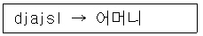
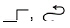
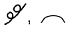
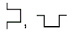
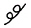
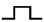
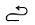
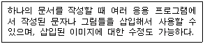
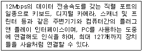

워드프로세서-2급(폐지) (2005-03-06 기출문제)
1과목: 워드프로세서 용어 및 기능
1. 다음의 기억장치 중에서 전원이 차단되면 기록내용이 사라지는 것은?
- ROM(Read Only Memory)
- RAM(Random Access Memory)
- 플로피디스크(Floppy Disk)
- 하드디스크(Hard Disk)
(정답률: 75%)

2. 다음 중 빛을 이용하는 장치가 아닌 것은?
- OCR
- CD-ROM
- 잉크젯 프린터
- 스캐너
(정답률: 75%)
3. 다음 중 각 단위에 대한 설명으로 옳지 않은 것은?
- DPI : 인쇄 속도 단위로 인치 당 인쇄되는 점의 크기를 의미한다.
- LPM : 라인 프린터의 인쇄 속도 단위로 분 당 인쇄할 수 있는 줄 수를 의미한다.
- PPM : 페이지 프린터의 인쇄 속도 단위로 분당 인쇄되는 페이지 수를 의미한다.
- 피치(Pitch) : 인쇄할 문자와 문자 사이의 간격을 나타내는 단위로 1인치에 인쇄되는 문자수를 의미한다.
(정답률: 62%)
4. 다음 중 조합 키와 토글(toggle) 키로만 짝지어진 것은?
- Num Lock, Tab, Alt
- Shift, Insert, Caps Lock
- Ctrl, Tab, Back Space
- Print Screen, Sapce Bar, Insert
(정답률: 79%)
5. 다음 중 문서 작성의 탭 기능에 대한 설명으로 옳지 않은 것은?
- 일정한 간격으로 커서를 신속하게 이동시킬 수 있다.
- 탭을 이용하면 특정 단어를 빠르게 찾을 수 있다.
- 탭 간격은 임의로 변경할 수 있고 삭제할 수도 있다.
- 탭의 종류에는 왼쪽 탭, 오른쪽 탭, 점끌기 탭, 소수점 탭 등이 있다.
(정답률: 69%)
6. 다음 중 검색(찾기)과 치환(바꾸기) 기능에 대한 설명으로 옳지 않은 것은?
- 검색은 문서의 내용 중 특정 문자나 단어, 문자열 등을 찾는 기능이다.
- 치환을 하면 문서의 내용이나 분량에 변화가 생기지 않는다.
- 치환 기능을 이용하여 특수 문자로 변환할 수 있다.
- 검색은 문서 내용을 변화시키지 않는다.
(정답률: 70%)
7. 다음 중 보조기억장치에 저장된 파일을 주기억장치로 불러오는 기능을 무엇이라고 하는가?
- 세이브(Save)
- 로그온(Log On)
- 클립보드(Clip Board)
- 로드(Load)
(정답률: 71%)
8. 공문서의 기안은 일반적으로 무슨 문서의 형식으로 함을 원칙으로 하는가?
- 전자문서
- 일반문서
- 법규문서
- 공고문서
(정답률: 71%)
9. 사무문서의 유통경로와 운반거리를 단축하고, 처리시간이나 기일을 정하는 것은 사무관리의 원칙 중 어느 것과 관련이 있는가?
- 정확성
- 신속성
- 용이성
- 경제성
(정답률: 79%)
10. 다음 중 차례(목차)만들기 기능에 대한 설명으로 옳지 않은 것은?
- 단행본이나 논문작성 등에 필요한 기능이다.
- 특정 내용의 순서를 책의 차례 식으로 구성하고자 할 때 사용한다.
- 종류에는 제목차례, 표 차례, 그림차례가 있다.
- 차례 만들기 결과는 지정된 그림파일로 저장된다.
(정답률: 64%)
11. 다음 중 키와 기능의 연결이 옳지 않은 것은?
- → : 커서를 오른쪽으로 일정간격(보통 4 - 8칸 정도) 이동한다.
- Back Sapce : 현재 위치의 왼쪽 문자를 지우며, 커서와 오른쪽 문자를 왼쪽으로 이동한다.
- Space Bar: 삽입 상태에서는 공백이 삽입되며, 커서를 현재 위치의 오른쪽으로 이동한다.
- Enter : 커서를 다음 행으로 이동한다.
(정답률: 74%)
12. 다음 중 문단의 시작을 몇 글자 안쪽에서 시작하게 하는 기능을 무엇이라고 하는가?
- 내어쓰기(Outdent)
- 들여쓰기(Indent)
- 상용구(Glossary)
- 워드 랩(Word Wrap)
(정답률: 81%)
13. 다음 중 금칙처리에 대한 설명으로 옳지 않은 것은?
- 행의 맨 처음에 올 수 없는 문자를 행두 금칙문자라 한다.
- 행의 맨 뒤에 올 수 없는 문자를 행말 금칙문자라 한다.
- 행두 금칙문자에는 > ) ] } 등이 있다.
- 행말 금칙문자에는 % ? ! { 등이 있다.
(정답률: 82%)
14. 다음 중 글꼴(Font)에 대한 설명으로 옳지 않은 것은?
- 비트맵(Bitmap) 글꼴은 점의 조합으로 표시되며 확대하면 계단현상이 발생한다.
- 외곽선(Outline) 글꼴은 확대해도 외곽선이 매끄럽게 처리된다.
- 오픈타입(Open Type) 글꼴은 기본적으로 비트맵 형식이다.
- 트루타입(True Type) 글꼴은 확대해도 글자가 매끄럽게 처리된다.
(정답률: 65%)
15. 한/영 키를 잘못 눌러 한글과 영문이 뒤바뀐 상태에서 "djajsl"을 입력하였더니 입력과 동시에 다음과 같이 자동으로 "어머니"로 변경시켜주었다. 이에 해당되는 기능은 무엇인가?

- 한영 자동 전환
- 대/소문자 변경
- 자동요약
- 맞춤법 검사
(정답률: 92%)
16. 여러 문서를 참조하면서 작업하기 위해 한 화면을 둘 이상의 영역으로 나누는 기능을 무엇이라 하는가?
- 레이아웃(Layout)
- 창나누기, 화면나누기(Split Screen)
- 다단
- 자동반복
(정답률: 71%)
17. 다음 중 인쇄 용지에 대한 설명으로 옳지 않은 것은?
- 연속 용지는 라인 프린터와 같은 충격식 프린터에서 주로 사용된다.
- 레이저 프린터에서는 주로 낱장 용지가 사용된다.
- 낱장 용지의 표준 크기는 공문서 규격인 A4이다.
- 낱장 용지의 크기는 B0> A1> B1> A2> B2... 순이다.
(정답률: 77%)
18. 다음 중 커서가 위치한 곳의 문자는 없어지면서 새로운 문자가 입력되는 상태가 아닌 것은?
- 삽입상태
- 오버라이트(Overwrite)
- 겹쳐쓰기
- 수정상태
(정답률: 65%)
19. 다음 중 서로 상반되는 의미를 나타내는 교정부호끼리 짝지어진 것은?



(정답률: 88%)
20. 다음 교정부호 중 위로 올라간 글자를 아래로 끌어내리는 기능의 부호는?



(정답률: 89%)
2과목: PC 운영 체제
21. 다음 중 한글 Windows 98의 [탐색기]에서 할 수 없는 기능은?
- 파일을 삭제할 수 있다.
- 바로가기 아이콘을 만들수 있다.
- 프로그램을 실행시킬 수 있다.
- 시스템을 재시동할 수 있다.
(정답률: 70%)
22. 한글 Windows 98에서 기본 프린터의 인쇄 관리자 창에 관한 설명으로 옳지 않은 것은?
- 인쇄 목록에서 인쇄 순서를 변경할 수 있다.
- 인쇄 중인 내용을 일시 중지시킬 수 있다.
- 인쇄 중인 내용을 취소시킬 수 있다.
- 인쇄 중인 내용을 확대/축소 인쇄할 수 있다.
(정답률: 66%)
23. 한글 Windows 98에서 실행중인 프로그램을 종료하는 방법으로 옳지 않은 것은?
- 제목 표시줄 왼쪽 끝에 있는 창 제어 아이콘을 더블 클릭한다.
- 제목 표시줄 오른쪽 끝에 있는 X 단추를 클릭한다.
- 제목 표시줄에서 마우스 우측 단추로 클릭하여 나타나는 메뉴에서 [닫기]를 선택한다.
- Alt 키와 Esc 키를 동시에 누른다.
(정답률: 69%)
24. 한글 Windows 98에서 서로 다른 두 드라이브 간에 파일을 복사하지 않고 이동시키기 위하여, 끌어놓기 기능을 사용할 때 같이 사용해야 하는 키는?
- Ctrl 키
- Alt 키
- Shift 키
- Tab 키
(정답률: 67%)
25. 한글 Windows 98에서 [보조 프로그램]에 있는 [그림판]에서 Shift 키를 누른 상태로 그릴 수 없는 것은?
- 수평선
- 45°대각선
- 타원
- 정사각형
(정답률: 66%)
26. 한글 Windows 98에서 이미 설치되어 있는 하드웨어 정보를 볼 수 있는 방법은?
- [탐색기]-[도움말]-[Windows 정보]
- [네트워크 환경]-[등록 정보]-[컴퓨터 확인]
- [프로그램]-[보조프로그램]-[엔터테인먼트]
- [제어판]-[시스템]-[장치관리자]
(정답률: 59%)
27. 한글 Windows 98에서 임의의 폴더 내에 있는 특정 파일을 Shift 키와 Ctrl 키를 동시에 누른 채 바탕화면으로 드래그 앤 드롭하면 어떤 일이 생기는가?
- 해당 파일이 삭제된다.
- 해당 파일의 이름 바꾸기를 할 수 있다.
- 해당 파일의 등록정보 상자가 나타난다.
- 해당 파일의 바로 가기 아이콘을 만들 수 있는 바로 가기 메뉴가 나타난다.
(정답률: 73%)
28. 한글 Windows 98의 [제어판]에 있는 [내게 필요한 옵션] 프로그램에서 할 수 있는 기능이 아닌 것은?
- 키보드의 숫자 키패드로 마우스 포인터를 제어할 수 있다.
- 왼손잡이를 위한 마우스를 설정할 수 있다.
- Caps Lock, Num Lock, Scroll Lock을 누를 때 신호음을 들을 수 있다.
- 빠르게 반복되는 키의 입력을 무시하고 키의 반복 속도를 느리게 지정할 수 있다.
(정답률: 63%)
29. 한글 Windows 98에서 인터넷을 사용할 때 문자로 되어 있는 도메인 네임을 숫자로 구성된 IP 주소로 변경해 주는 시스템은?
- 게이트웨이
- DNS
- SLIP/PPP
- 바인딩
(정답률: 75%)
30. 한글 Windows 98의 바탕화면이나 임의의 폴더창 화면에 나타나는 개체들을 선택하려고 할 때 설명으로 옳은 것은?
- 불연속 개체를 선택하기 위해서는 Shift 키를 이용하면 된다.
- 전체 개체를 선택하기 위해서 Ctrl + A 키를 누른다.
- 연속된 개체를 선택하기 위해서는 Ctrl + Z 키를 이용하면 된다.
- 선택 항목 반전이란 현재 선택된 개체를 포함한 모든 개체를 선택하는 것이다.
(정답률: 66%)
31. 다음 중 한글 Windows 98의 [시스템 도구]에서 제공하는 [디스크 검사]에 관한 설명으로 옳지 않은 것은?
- 파일과 폴더의 오류를 검사할 수 있다.
- 물리적 오류를 찾아내기 위한 디스크 표면 검사를 할 수 있다.
- CD-ROM의 파일 오류 검사를 할 수 있다.
- 오류 자동 수정 기능이 있다.
(정답률: 59%)
32. 한글 Windows 98에서 창에 표시되는 항목의 크기나 색깔 또는 바탕화면의 해상도 등을 변경하고자 할 때 사용하는 [제어판]의 항목은?
- 시스템
- 글꼴
- 내게 필요한 옵션
- 디스플레이
(정답률: 70%)
33. 한글 Windows 98에서 바탕화면 위에 활성화된 응용 프로그램 창을 순차적으로 전환할 때 사용하는 바로가기 키는?
- Alt + Tab
- Alt + Shift
- Shift + Space Bar
- Ctrl + Esc
(정답률: 72%)
34. 다음의 설명이 의미하는 한글 Windows 98의 지원 기능은?

- OLE(Object Linking and Embedding)
- 멀티태스킹(Multi-tasking)
- 자동 감지 설치(Plug and Play)
- 멀티포맷(Multiple Formats)
(정답률: 77%)
35. 한글 Windows 98에서 하드 디스크의 파일이 차지하는 공간과 사용되지 않은 공간을 다시 정렬하여 프로그램을 보다 빨리 실행할 수 있도록 하는 프로그램은?
- 디스크 오류 검사
- 디스크 정리
- 디스크 공간 늘림
- 디스크 조각 모음
(정답률: 60%)
36. 다음 중 한글 Windows 98에서 바로 가기 아이콘을 만들 수 있는 항목이 아닌 것은?
- A: 드라이브에 대한 바로가기 아이콘
- 파일이나 폴더에 대한 바로가기 아이콘
- 휴지통에 대한 바로가기 아이콘
- 시작 단추에 대한 바로가기 아이콘
(정답률: 57%)
37. 한글 Windows 98에서 [네트워크 등록정보] 창의 [컴퓨터 확인] 탭을 이용하여 알 수 있는 정보가 아닌 것은?
- 컴퓨터 이름
- 사용자 정보
- 작업 그룹
- 컴퓨터 설명
(정답률: 60%)
38. 한글 Windows 98에서 시작 메뉴의 [찾기]를 실행하여 파일이나 폴더를 찾으려할 때, 사용 가능한 조건 항목이 아닌 것은?
- 파일의 형식
- 파일의 내용에 포함하는 문자열
- 파일을 만든 날짜
- 파일의 변경 횟수
(정답률: 67%)
39. 한글 Windows 98의 [보조프로그램]-[엔터테인먼트]에서 제공되는 프로그램으로 옳지 않은 것은?
- CD 재생기
- 볼륨 조절
- 멀티미디어
- 녹음기
(정답률: 49%)
40. 한글 Windows 98에서 마우스의 드래그 앤 드롭 기능을 사용하여 수행할 수 있는 작업이 아닌 것은?
- 파일, 폴더 등의 위치 이동 또는 복사
- Windows 창 크기 조절
- 바탕화면에 실행 프로그램의 바로 가기 아이콘 만들기
- 비연속적인 파일 또는 폴더 지정
(정답률: 56%)
3과목: PC 기본 상식
41. 다음 중 정보화 사회의 부작용에 대한 대처방안으로 옳지 않은 것은?
- 정보윤리 의식을 고취시켜 컴퓨터 범죄를 예방
- 정보 민주주의의 실현과 정보의 공유
- 지적 재산권에 대한 인식의 사회화
- 정보기술의 무조건적인 독점권 인정
(정답률: 68%)
42. 다음 중 멀티미디어의 특징으로 볼 수 없는 것은?
- 아날로그(Analog)
- 쌍방향성(Interactive)
- 비선형성(Non-Linear)
- 정보의 통합성(Intergration)
(정답률: 62%)
43. 다음 중 시스템 소프트웨어가 아닌 것은?
- 운영체제
- 워드프로세서
- 언어번역프로그램
- 로더
(정답률: 47%)
44. 다음 중에서 컴퓨터를 네트워크로 연결하기 위해 사용하는 인터네트워킹 기기가 아닌 것은?
- 리피터(Repeater)
- 라우터(Router)
- 브리지(Bridge)
- 레이드(RAID)
(정답률: 57%)
45. 기존의 파일 시스템에 비해 데이터베이스 시스템이 갖는 장점으로 옳지 않은 것은?
- 데이터의 공유
- 데이터 중복의 최대화
- 데이터의 일관성
- 데이터의 무결성 증대
(정답률: 50%)
46. 다음 중 바이러스에 대한 설명으로 옳지 않은 것은?
- 바이러스 감염시 일정한 날짜에 시스템을 포맷하는 증상이 나타날 수 있다.
- 바이러스는 PC 통신으로만 감염된다.
- 컴퓨터에 심각한 피해를 주지않고 이상한 메시지를 출력하는 바이러스를 가짜(Hoax) 바이러스라고 한다.
- 주로 실행 파일에 감염되어 손상시키는 바이러스를 파일 바이러스로 분류하며 CIH, 예루살렘이 해당된다.
(정답률: 67%)
47. 다음중 근거리 통신망(LAN)의 효과와 거리가 먼 것은 무엇인가?
- 정보자원의 공유
- 정보 처리 시스템의 비용 절감
- 통합된 사무 자동화의 구축
- 같은 기종간의 컴퓨터만 통신 가능
(정답률: 72%)
48. 다음 중 나머지 셋과 다른 종류의 멀티미디어 데이터를 나타내는 것은?
- BMP
- GIF
- JPG
- MP3
(정답률: 81%)
49. 다음 중 멀티미디어 저작도구에 대한 설명으로 옳지 않은 것은?
- 사용자의 입력에 따라 요소들의 제어흐름을 조정할 수 있는 기능이 있다.
- 미디어 파일들간의 동기화 정보를 통하여 요소들을 결합하여 실행하는 기능이 있다.
- 저작도구 사용시 멀티미디어 요소를 결합하기 위해 대부분 C 나 C++ 등의 프로그래밍 언어를 이용한다.
- 다양한 미디어 파일이나 미디어 장치를 유연하게 연결할 수 있다.
(정답률: 66%)
50. 다음 중 전화선으로 연결된 통신망을 이용하기 위해서 디지털(Digital) 신호를 아날로그(Analog) 신호로 변환하기 위해 사용되는 통신기기는?
- 라우터(Router)
- 모뎀(Modem)
- 브리지(Bridge)
- CSU
(정답률: 76%)
51. 다음 중에서 주기억장치에 대한 설명으로 옳지 않은 것은?
- 주기억장치에서 정보를 얻는데 걸리는 시간을 탐색시간(Seek Time)이라고 한다.
- 주기억장치를 한번에 접근할 수 있는 정보의 단위는 보통 단어(워드)이다.
- 접근시간(Access Time)이 빠르다는 것은 그만큼 성능이 좋다는 의미이다.
- 일반적으로 주기억장치에 접근하기 위해서는 주소를 사용한다.
(정답률: 55%)
52. 다음 중 CISC와 RISC 방식에 대한 설명으로 옳지 않은 것은?
- CISC는 기능이 많은 명령어로 구성된다.
- CISC는 적은 수의 레지스터를 사용하므로 프로그래밍이 간단하다.
- RISC는 명령어를 최소로 줄여 단순하게 만들어 진다.
- RISC는 CISC에 비해 처리속도가 느리다.
(정답률: 58%)
53. 다음 중 차세대 개인용 정보 단말기로 펜 입력기능, 개인 스케줄 관리, 무선 통신기능, 전자책 기능 등을 주로 수행하며 손으로 쥘만한 크기의 휴대용 정보통신 기기는?
- COM
- 노트북 컴퓨터
- 마이크로 컴퓨터
- PDA
(정답률: 72%)
54. 다음 중 컴퓨터를 분류하는 방법으로 옳지 않은 것은?
- 컴퓨터의 모양에 따른 분류
- 처리하는 데이터의 형태에 의한 분류
- 사용 목적에 따른 분류
- 컴퓨터 처리능력에 따른 분류
(정답률: 69%)
55. 다음 중 부가가치통신망을 의미하는 약어는?
- LAN
- VAN
- WAN
- SAN
(정답률: 77%)
56. 지적재산권이 있는 소프트웨어를 복사하여 판매하였을 경우, 어떤 법에 저촉되는가?
- 개인정보법
- 컴퓨터프로그램보호법
- 사생활침해방지법
- 통신비밀보호법
(정답률: 76%)
57. 다음 중 CPU의 처리시간을 일정한 시간(Time Quantum)으로 나누어서 여러 개의 작업을 연속적으로 처리하는 기법을 무엇이라고 하는가?
- 일괄 처리
- 시분할 처리
- 실시간 처리
- 분산 처리
(정답률: 65%)
58. 다음 중 효율적인 디스크 관리 방법으로 옳지 않은 것은?
- 디스크 검사로 손상된 영역을 수정한다.
- 디스크 조각 모음을 하여 디스크를 최적화시킨다.
- 디스크 오류 검사를 통해 오류발견 위치를 FAT에 기록하고 사용할 수 없도록 한다.
- 디스크 공간 늘림으로 디스크 오류 발생률을 줄인다.
(정답률: 48%)
59. 다음은 무엇에 대한 설명인가?

- PCI
- USB
- SCSI
- EISA
(정답률: 86%)
60. 다음 중 한 유형의 미디어를 클릭하여 동일 유형 또는 다른 유형의 미디어로 이동하는 기술을 무엇이라고 하는가?
- 멀티미디어
- 미디(MIDI)
- 스트리밍(Streaming)
- 하이퍼미디어
(정답률: 63%)